UDN
Search public documentation:
LightmassJP
English Translation
中国翻译
한국어
Interested in the Unreal Engine?
Visit the Unreal Technology site.
Looking for jobs and company info?
Check out the Epic games site.
Questions about support via UDN?
Contact the UDN Staff
中国翻译
한국어
Interested in the Unreal Engine?
Visit the Unreal Technology site.
Looking for jobs and company info?
Check out the Epic games site.
Questions about support via UDN?
Contact the UDN Staff
Unreal Lightmass - Unreal Engine 3の静的グローバルイルミネーション
ドキュメント概要: Unreal Engine 3 グローバル イルミネーション システムの概要。 ドキュメントの変更ログ: Steven Haines? により作成され、Daniel Wright により大幅に修正、Derek Cornish により更新。Lightmass の定義とその機能の概要
Lightmass は、エリアシャドウイングやディフューズの相互反射のような光の複雑な相互作用を含むライトマップを作成します。残りのレンダリングパイプライン (動的ライティングとシャドウイング) に直交し、ライトマップと静的シャドウマップをより品質の高いものに置き換えます。 UE3 エディタと Lightmass 間の通信は Unreal Swarm によって処理されます。Swarm はライティングのローカルビルドを管理する機能で、それをリモートマシンに分散することもできます。 Swarm Agent (Swarm エージェント) はビルド処理の追跡も行い、現在作業中のマシン、作業の対象、それぞれが使用するスレッド数などに関する最新情報をレポートします。下の方にあるバーは、ビルドの完成状況を示します。 次の図は、ライティングのスレッド数が 8 のローカルビルドの状況を示しています。 詳細については Unreal Swarm ページを参照してください。
詳細については Unreal Swarm ページを参照してください。
バージョン
Lightmass は、QA_APPROVED_BUILD_JUN_2009 (2009 年 6 月 QA 承認) ビルドで初めて導入されました。レガシーサポート
新しいマップで古い UE3 のライティングを使用する
2009 年 6 月 QA 承認ビルド以降は、デフォルト設定として新しいマップは Lightmass とグローバルイルミネーションを使用することになっています。この設定は、UnrealEd の [View]->[World Properties]->[Lightmass] にあるbUseGlobalIllumination で制御します。UnrealEd の [Lighting Build Options] (照明のビルドオプション) ダイアログからアクセスすることもできます。古い UE3 ライティングを使用するには、 bUseGlobalIllumination を無効にしてください。
Lightmass を使用するように既存のマップを変換する
Lightmass が統合される以前に作成されたマップのbUseGlobalIllumination は、*false* に設定されていて、古い UE3 静的ライティングパスの使用を続けます。既存レベルの設定を変換するためのステップは以下のとおりです。
-
bUseGlobalIlluminationを true またはオンに設定します。 - 詳細なグローバルイルミネーションが必要なレベル部分の周囲に、1 つまたは複数の LightmassImportanceVolumes を配置します。これらのボリューム半径の合計値がビルド時間を大きく左右するため、対象範囲をできるだけぴったり包囲するように配置してください。
- ラベル内にあるフィルライトを無効にするか、または削除します。Lightmass が光のバウンス (跳ね返り) を計算するので、ドミナント ライトを残すだけでかまいません。スカイライトは Lightmass ではほとんど役に立たず、コントラストがある場合には下がる一方なので、アンビエント項に使われている場合は無効にするのが一番です。もちろん、芸術的な面からコントロールするために、フィルライトを残しておくこともできます。
Lightmass の機能
エリアライトとシャドウ
以前の UE3 静的ライティングでは、ライトには表面積がなく、すべて 1 点 (directional (平行、指向性) ライトの場合は単一方向) から発するものとして扱われていました。 エリアシャドウは、ライトマップテクスチャ内でシャドウ結果をフィルタすることで近似されていました。そのため、シャドウの半影 (penumbra) の鮮明度はライトマップ解像度に依存し、ライトマップ解像度が同じサーフェス部分は、半影サイズもすべて同じになっていました。 Lightmass では、すべてのライトがエリアライト (面照明) であることをデフォルトとし、Point (ポイント) と Spot (スポット) の光源が使用する形状は球体で、その半径は LightmassSettings の LightSourceRadius で設定します。平行ライトの光源は、シーンの端に位置するディスク (円盤) を使用します。光源のサイズは影の柔らかさを制御する 2 つの要因の 1 つで、光源が大きいほど柔らかな影になります。もう 1 つの要因は、影を受けるオブジェクトの位置から投影するオブジェクトまでの距離です。現実世界と同様に、この距離が大きいほどエリアシャドウは柔らかになります。 最初のイメージは古いUE3 静的ラインティングを使用する平行ライトで、半影のサイズはどこも同じです。 2番目のイメージでは、Lightmass がエリアシャドウを計算し、光源のサイズとオクルダーの距離によって鮮明度が調整されています。 地面に近い位置ほど、柱の影がより鮮明なのがわかります。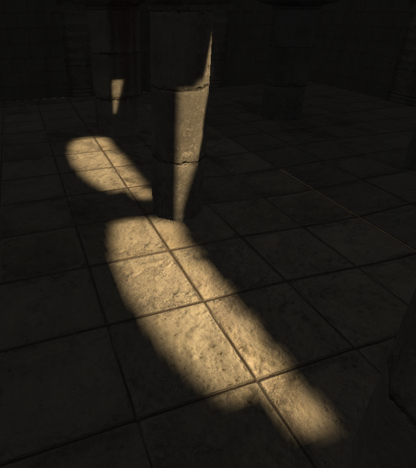
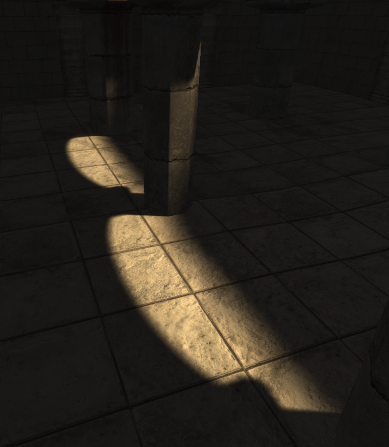
ポイントライトとスポットライトの光源半径は、イエローのワイヤーフレームで描かれ、影響半径はティール (緑がかった青) で描かれます。ほとんどの場合、光源がシャドウを投影するジオメトリと交差していないこと、またはライトがそのジオメトリの両側で光を放つこと、の 2 点の確認をお勧めします。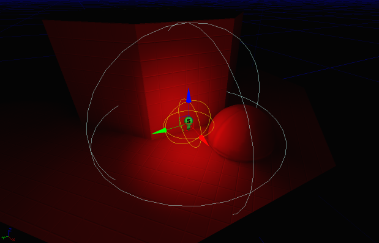
Signed Distance Field (符号付き距離場) のシャドウ
Lightmass では、異なるエンコーディング法を使ってシャドウマップを事前計算し、生成しておきます。この詳細は DistanceFieldShadowsJP ページを参照してください。ディフューズの相互反射
ディフューズの相互反射は、視覚的に最も大切なグローバルイルミネーションのライティングエフェクトです。Lightmass では、光は反射するのがデフォルトで、全方向に反射する光の量 (と色) はマテリアルのディフューズ (拡散反射光) 項によって制御されます。このエフェクトはカラーブリーディング (色の染み出し) と呼ばれることもあります。覚えてもらいたいのは、ディフューズの相互反射とは、入射光があらゆる方向に均等に反射することであり、見る側の方向や位置によって変わらないことです。 下の図は 1 つの平行ライトで構成された Lightmass によりビルドされたシーンで、直接ライティングだけを表しています。シャドウの半影部のサイズが、オクルダーの距離によって変化する点に注意してください。ライトから直接見えない範囲は黒くなっています。グローバルイルミネーションがない場合、このような結果になります。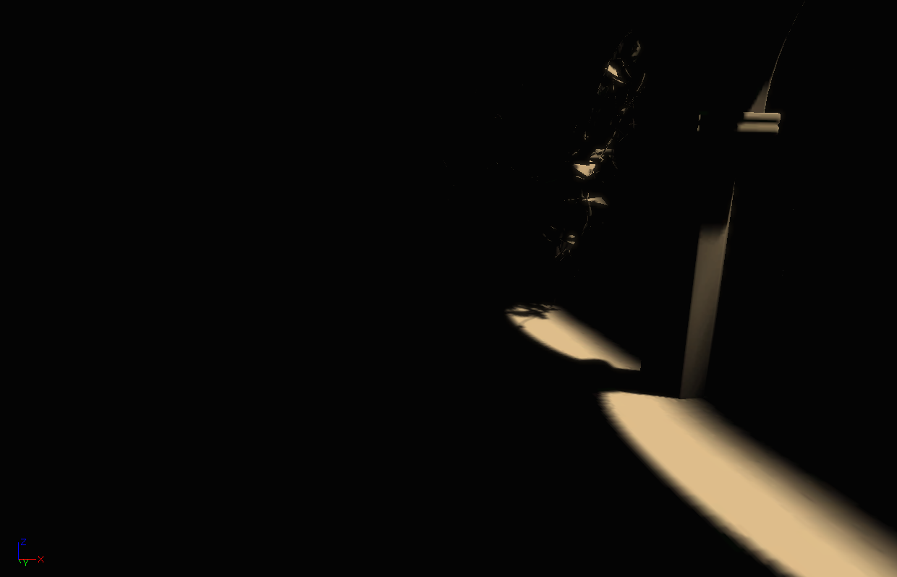
最初の拡散反射光によるグローバルイルミネーション反射は、次図のようになります。左側の椅子の背後の影を見てください。これは間接光の影なので、間接シャドウと呼ばれています。拡散反射の明るさと色は、入射光と、その光と相互作用するマテリアルのディフューズ項に依存します。光は跳ね返る (バウンスする) たびに暗くなり、一部の光は反射される代わりにサーフェスに吸収されます。次図では、柱の根元の方が直接光を受ける領域に近いので、間接光の量も他の表面より多くなっています。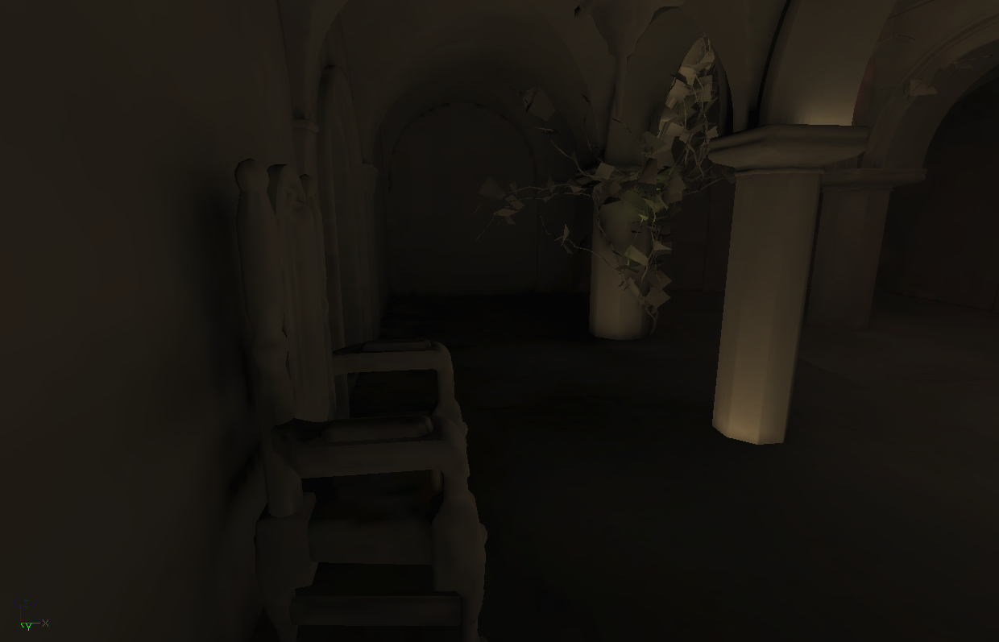
これは 2 番目の拡散反射です。光はさらに減衰され、より均等に分散されています。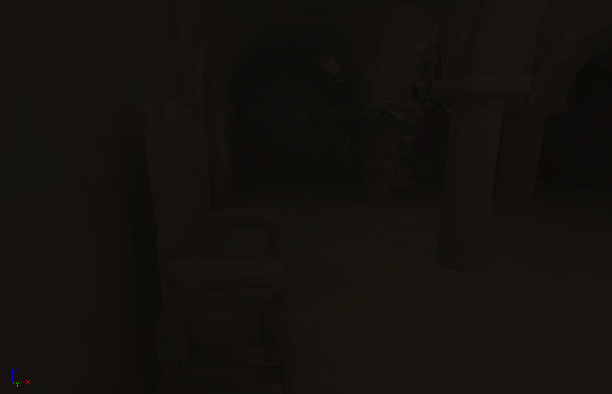
この図は 4 つの拡散反射を組み合わせたシーンです。フィルライトを手動で配置した場合と比べて、グローバルイルミネーションのシミュレーションはより複雑で現実味を帯びたライティングを生み出します。特に、間接シャドウはフィルライトでは実現できません。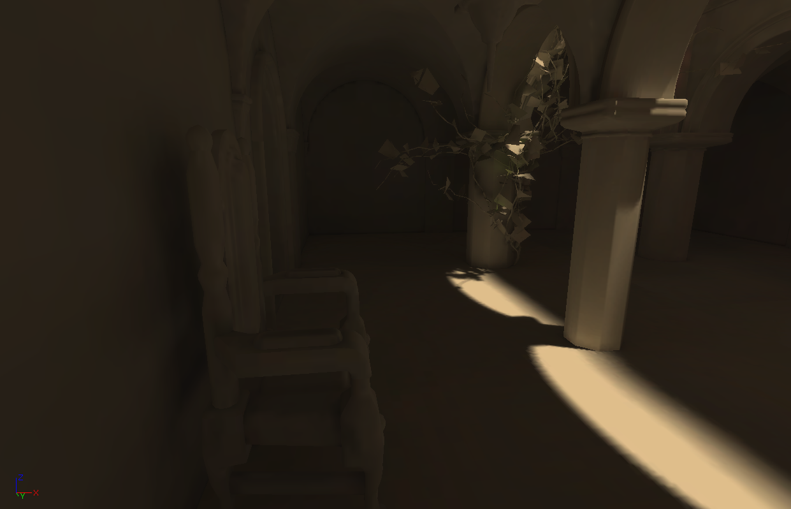
次の図からわかるように、跳ね返された光は元のマテリアルのディフューズ色を受け取ります。これが「カラーブリーディング」という言葉の由来で、純色に近い色の場合に最もはっきりと分かります。プリミティブ、マテリアルまたはレベルの DiffuseBoost を上げることで、この効果をさらに誇張できます。

キャラクターの照明
Lightmass は LightmassImportanceVolume 内の均一な 3D グリッドに低解像度でサンプルを配置し、キャラクターが歩くと予想される上向きのサーフェスの上にはそれより高い解像度でサンプルを配置します。各ライティングサンプルは、すべての方向から来る間接光をとらえますが、直接光はとらえません。 最初のイメージは、床の上に置かれたライティングサンプルをデバッグモードで可視化した画像で、2番目のイメージははLit モードの同じシーンです。赤いタペストリーの上方にあるサンプルが、赤いバウンスライトをとらえているのが分かります。サンプルは単色で可視化されますが、実際にはあらゆる方向からの光をとらえます。
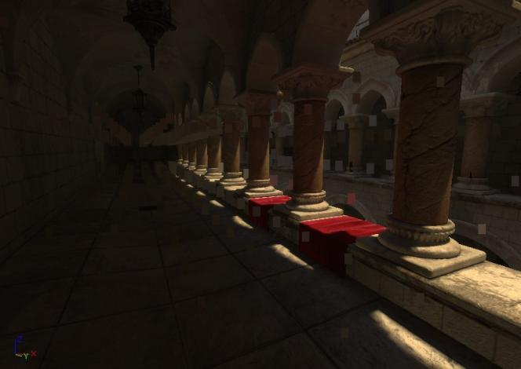
LightEnvironmentsJP は次にこれらのライティングサンプルを使って、アクタ位置の間接ライティングを調べます。間接ライティングはライト環境シャドウの色に影響しますが、方向には影響しません。 次図のキャラクターは、下の階段から来る最初のグローバルイルミネーションの反射を受けて薄明るくなっています。
制限事項
- 現在ライトサンプルは多量のメモリを消費する可能性があります。キャラクターの詳細な間接ライティングが必要な部分 (つまりプレイエリア) を十分に把握すれば、配置を最適化することができます。
- ライト環境を使用しない動的なリットオブジェクトは、直接ライティングの影響のみ受けます。
- LightmassImportanceVolume の外側のライト環境には、ブラックの間接ライティングが与えられます。
Emissive のメッシュエリアライト
静的オブジェクトに適用するマテリアルのエミッシブ (放射光) を投入して、メッシュエリアライトを作成することができます。メッシュエリアライトはポイントライトに似ていますが、光の表面の形状や強度を任意に設定することができます。正のエミッシブ テクセルは、テクセルの法線方向の半球内でそれぞれのテクセルの強度に基づいて光を放ちます。隣接するエミッシブテクセルのグループは、それぞれ 1 色を放つ 1 つのメッシュエリアライトとして処理されます。 最初のイメージは、根本的なマテリアルのエミッシブのみを示し、2番目のイメージは、それらのエミッシブテクセルから生まれた 4 つのメッシュエリアライトの結果を示しています (4 つのライトが生成されているのは、隣接する正のエミッシブテクセルパッチが 4 つあるからです)。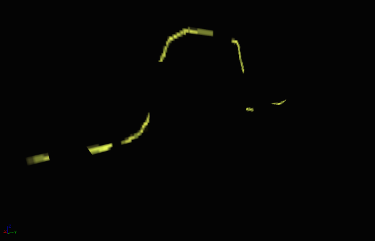
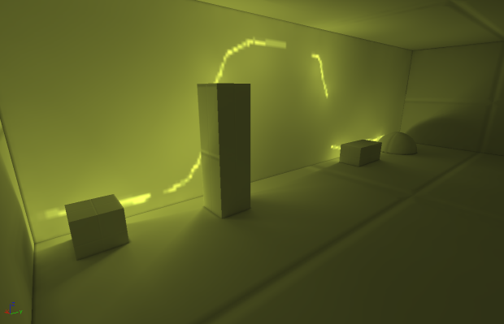
デフォルトでは、エミッシブ領域からメッシュエリアライトは作成されません。ライトが作成されるようにするには、bUseEmissiveForStaticLighting フラグを選択します。このフラグは、すべてのプリミティブコンポーネントの LightmassSettings グループにあり、BSP サーフェスではサーフェスのプロパティにあります。
EmissiveLightFalloffExponent 設定を使って、エミッシブライトのフォールオフ (減衰) を調整することができます。これはポイント ライトのフォールオフ指数と同様に機能し、指数を大きくすると、ライトの影響半径に近づくにつれて急速に弱くなります。メッシュエリアライトの影響半径は、ライトの放射表面積の大きさと、ライトの明るさに基づいて自動的に決まります。==EmissiveBoost== は、すべてのエミッシブテクセルの強度をスケーリングし、影響半径にも作用します。
メッシュエリアライトによってビルド時間が加算され、その影響の度合いはポイントライトの場合とほぼ同じである点に注意してください。影響半径が小さいメッシュエリアライトの方が、速く計算されます。
制限事項
- 現在メッシュエリアライトは、重なり合うマテリアルテクスチャの座標を処理しません。UV 空間で複数の三角形が同じエミッシブテクセルを覆う場合、それらの三角形の 1 つだけが光の放射に使われます。
- 現在メッシュエリアライトは動的オブジェクトに作用しません。
半透明 (translucent) シャドウ
光が半透明マテリアルライトを通過し、静的シャドウを投影するメッシュに適用されると、エネルギーをいくらか失い、半透明 (translucent) シャドウとなります。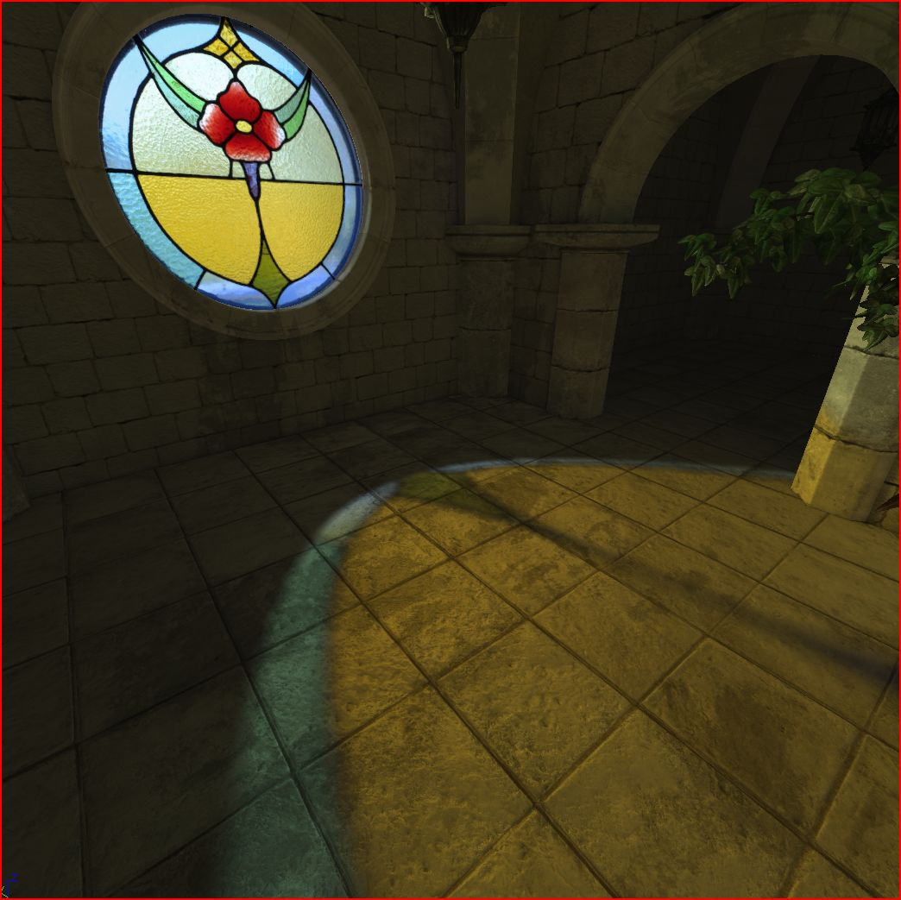
半透明シャドウの色
マテリアルを通過する光の量はTransmission と呼ばれ (これはマテリアルエディタの TransmissionColor や TransmissionMask とは異なります。この 2 つは不透明なマテリアルに作用するものです)、カラーチャンネルごとに 0 から 1 の範囲で定められます。値が 0 の場合は完全に不透明で、1 は入射光がマテリアルの影響を受けずに通過することを意味します。Transmission にはマテリアルデータが直接提供されず、現在は以下に示す他のマテリアル値からこれを求めています。
- Lit 状態のマテリアル
- BLEND_Translucent と BLEND_Additive: Transmission = Lerp(White, Diffuse, Opacity)
- BLEND_Modulate: Transmission = Diffuse
- Unlit 状態のマテリアル
- BLEND_Translucent と BLEND_Additive: Transmission = Lerp(White, Emissive, Opacity)
- BLEND_Modulate: Transmission = Emissive
半透明シャドウの鮮明度
半透明シャドウの鮮明度を左右するいくつかの要因があります。 最初のイメージは、大きな光源を使用し (LightSourceAngle が 5 の平行ライト)、2番目のイメージは、小さな光源を使用しています (LightSourceAngle が 0)。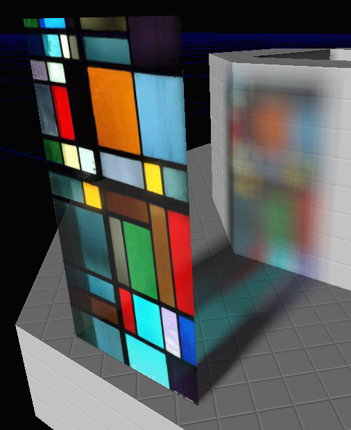
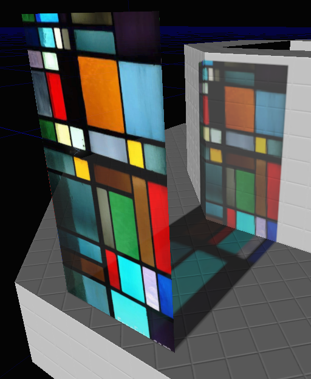
最初のイメージは、左側で小さな光源を使用していますが、ライトマップ解像度が低すぎて半透明シャドウをとらえることができません。2番目のイメージでは、マテリアルの読み出し時の解像度 (マテリアル エディタのExportResolutionScale で制御します) が低すぎたので、鮮明な影をとらえていません。
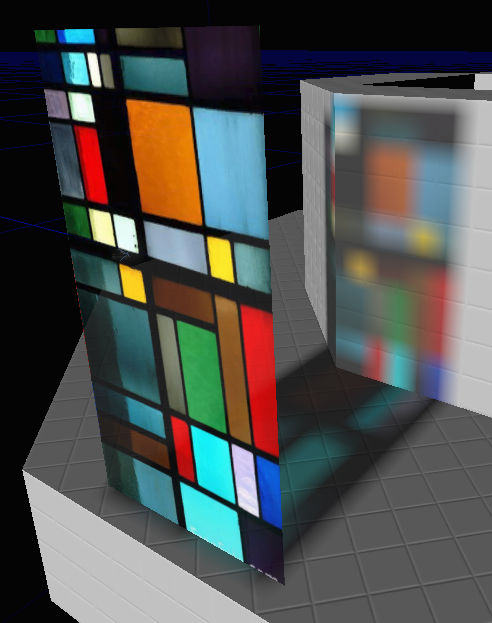
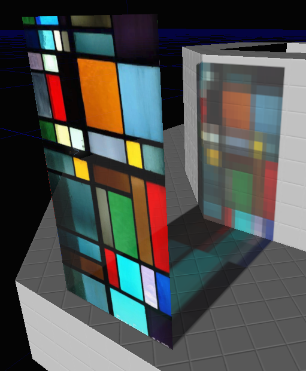
間接光も半透明マテリアルの影響を受けます。2番目にある窓は、そのTransmission に基づいて入射光をフィルタし、窓を通過した光はその色を変えてシーンの周辺に反射しています。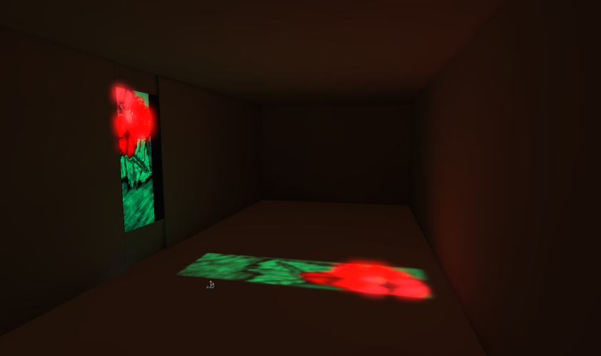
制限事項
- 半透明マテリアルは、現在は光を拡散しないので、周辺オブジェクトへの色の染み出しはありません。
- 最初の拡散反射は、現在のところ半透明シャドウの影響を受けません。これは、最初のバウンス間接光が半透明マテリアルを通過するときには、そのマテリアルの Transmission によってフィルタされないことを意味します。
マスク (Masked) シャドウ
Lightmass は、BLEND_Masked マテリアルの不透明マスクをシャドウの計算に含めます。エディタのビューポートでクリップされるマテリアル部分からは影が生まれません。これを利用して、ツリーやフォーリッジからより詳細な影を生み出すことができます。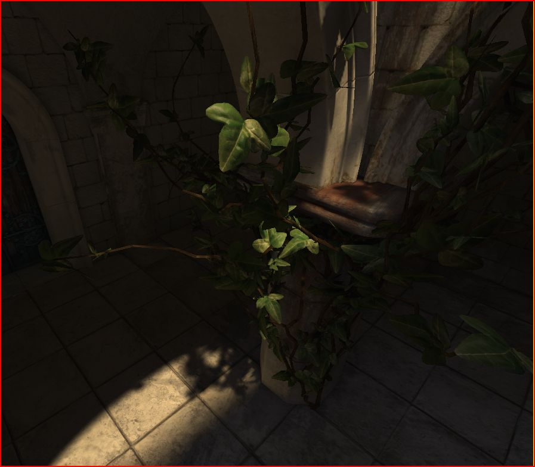
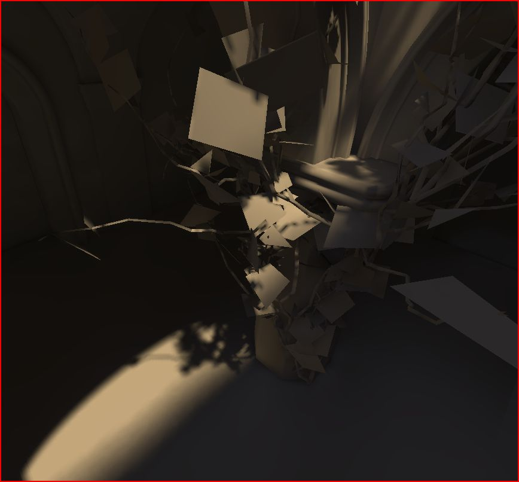
アンビエントオクルージョン (AO)
Lightmass は詳細な間接シャドウを自動的に計算しますが、芸術的な目的で、またはシーン内の近接感覚を強調するために、間接シャドウを誇張すると効果があがることがあります。 アンビエントオクルージョン (AO) とは、均等に明るい上半球から得られる間接シャドウイングのことで、雲に覆われた空のようなものです。Lightmass はアンビエントオクルージョンの計算をサポートし、それを直接/間接ライティングに適用してライトマップにベイクします。アンビエントオクルージョンはデフォルトでは無効になっています。有効にするには、UnrealEd で [View] ->[World Properties] ->[Lightmass] に進み、==bUseAmbientOcclusion== を選択します。 最初のイメージは、間接ライティングを使用するシーンですが、アンビエントオクルージョンが適用されていません。2番目のイメージでは同じシーンで、直接および間接ライティングの両方にアンビエントオクルージョンが適用されています。オブジェクトが引っ付いているところが暗くなっているのが分かります。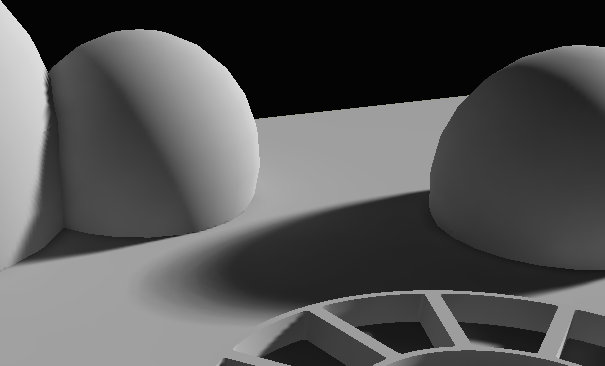
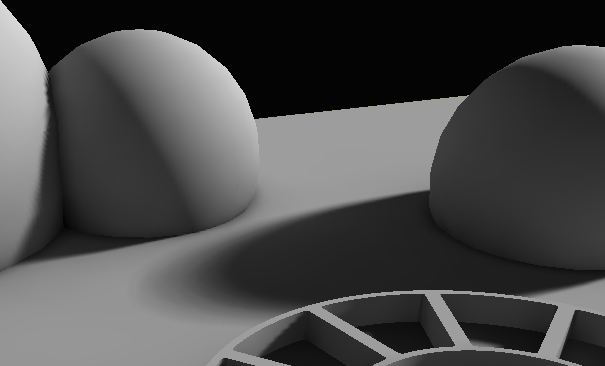
アンビエントオクルージョンの設定:- bVisualizeAmbientOcclusion - ライティングのビルド時に、ライトマップをオクルージョン要素でオーバーライドします。オクルージョン要素がどのようなものであるか確認したいときや、設定値を変えてその効果を比較したいときに便利です。
- MaxOcclusionDistance - 2 つのオブジェクト間の距離がこの値より小さい場合に、オブジェクトによるオクルージョンが発生します。
- FullyOccludedSamplesFraction - 完全なオクルージョンに達するために遮へいしなければならないサンプル数の割合。プリミティブ単位の FullyOccludedSamplesFraction もあるので注意してください。これにより、オブジェクトによって別のオブジェクトに発生するオクルージョンの量を調整できます。
- OcclusionExponent - 指数が高いほどコントラストも大きくなります。
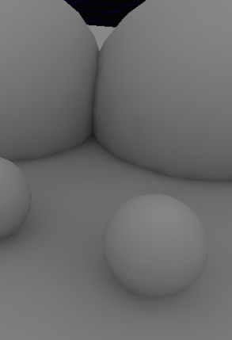
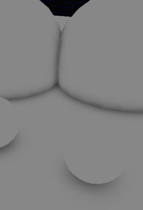
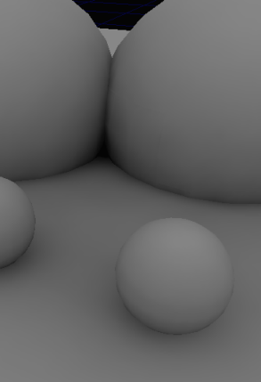
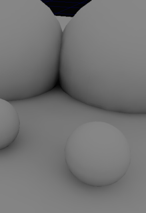
NumIndirectLightingBounces が 0 より大きいとき、ライティングのビルドに関しては AO はほとんどコストがありません。制限事項
- アンビエントオクルージョンの場合、コーナー部分で急激に変化するので、適切に見えるようにライトマップ解像度をかなり高くする必要があります。頂点ライトマップだとメッシュの大半が暗くなり、不自然な結果になります。その理由は、頂点がコーナー部分にあることが多く、コーナー部分はアンビエントオクルージョンが一番高いためです。
- アンビエントオクルージョンには高密度のライティングサンプルが必要なので (間接シャドウと同様に)、プレビュー品質のビルドで AO をプレビューするのはあまりよいことではありません。
Lightmass を使って最高の品質を得るには
ライティングを際立たせる
ディフューズ テクスチャ
レンダリングの際に、光があたるピクセルの色は Diffuse * Lighting と判定され、ライティングの視認レベルにディフューズ色が直接影響を及ぼします。コントラストが高い場合、またはディフューズ テクスチャが暗い場合はライティングを識別しにくく、コントラストが低い場合や中間域のディフューズ テクスチャの場合にはライティングを通してディテールが見えます。 最初のイメージ (中間域のディフューズテクスチャを使用) と、2番目のイメージ (これも Lightmass を適用してビルドされていますが、暗くて「うるさい (線がごちゃごちゃしている)」テクスチャを使用) で、ライティングの透明度を比較してみてください。2番目のイメージでは、影の変わり目のような周波の最も高い変化しか認識できません。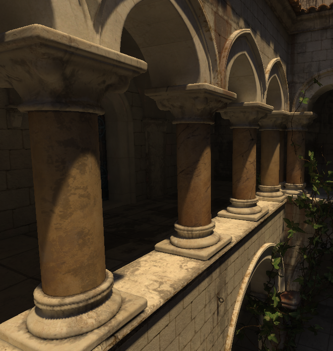
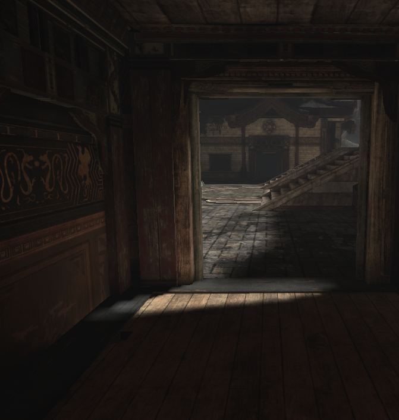
Diffuse 項を確認するには、表示モードをUnlit view mode にすると便利です。Unlit view mode では、最初のイメージは平坦でより単調に見えます。ということは、このシーンではすべての照明作業が (ディフューズではなく) ライティングから発生し、ピクセルの最終的な色の変化は、その大半がライティングの差異によるものである、と判断できます。 この詳細は、表示モード? ページを参照してください。
 Unlit の画像の数か所でエディタのカラーピッカーを使い、左のシーンのディフューズ値は 0.5 前後で、右のシーンのディフューズ値は 0.08 前後であると確認しました。Photoshop を使ってこれらのアンリット画像のヒストグラムを 調べると、ディフューズ テクスチャの分布が良く分かります。*注意: Photoshop はガンマ空間でカラー値を示すため、127 (.5) ではなく 186 (.73) が、実際の黒と白の中間値を示します。左側の図が、ライティングがはっきりと視認できる画像のヒストグラムです。
Unlit の画像の数か所でエディタのカラーピッカーを使い、左のシーンのディフューズ値は 0.5 前後で、右のシーンのディフューズ値は 0.08 前後であると確認しました。Photoshop を使ってこれらのアンリット画像のヒストグラムを 調べると、ディフューズ テクスチャの分布が良く分かります。*注意: Photoshop はガンマ空間でカラー値を示すため、127 (.5) ではなく 186 (.73) が、実際の黒と白の中間値を示します。左側の図が、ライティングがはっきりと視認できる画像のヒストグラムです。
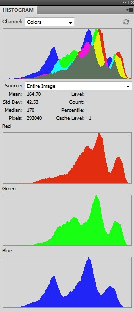

ライティングの設定
- Skylight (スカイライト) の使用は避けましょう！Skylight は一定値のアンビエント項をレベルに加算し、光が間接的にあたる領域のコントラストを低くします。
- 光が直接あたる領域と、間接的にあたる領域間のコントラストが高くなるようにライトを設定します。コントラストによって影との変わり目を簡単に際立たせ、レベルに心地よい奥行き感を与えます。
- 明るい部分が明るくなりすぎず、暗い部分は真っ暗ではなく、ディテールをまだ視認できるようにライトを設定します。仕上げの画面で必ず暗い部分をチェックしてください。
ライティングの品質改良
ライトマップ解像度
詳細な高品質のライティングを得るには、高解像度のテクスチャ ライトマップを使用するのが一番です。頂点ライトマップはテッセレーションと依存関係にあるので、エリアシャドウのようにライティングのディテールを描写できず、メッシュが存在する部分の全般的な色を表すことしかできません。ライトマップ解像度が高くなると、テクスチャプールのメモリの使用量が増えてビルド時間が長くなるというマイナス面が発生しますが、これはトレードオフです。理想的には、視覚的に高い影響を及ぼす周辺と、高周波シャドウが存在する場所にライトマップ解像度の大部分を割り当てるようにします。Lightmass Solver の品質
Lightmass Solver の設定は、[Lighting Build Options] (照明のビルド オプション) ダイアログで指定するビルド品質に基づいて、自動的に設定されます。[Production] (プロダクション品質) では、ディフューズテクスチャが適用されて、アーチファクトがほぼ目立たず、十分に良い品質が得られます。品質を大きく左右する設定、StaticLightingLevelScale があり、このスケール値を下げると、生成される間接ライティングサンプル数が増え、間接ライティングとシャドウイングの品質が向上しますが、ビルド時間も増えます。ほとんどの場合、これは大きなレベルのライティングスケールを上げる目的のみに使用します。ライティングのビルド時間を改善するには
Lightmass のビルド時間を改善するにはいくつかの方法があります。- 高周波 (急激に変化する) ライティングがある範囲にのみ高解像度のライトマップを使用し、間接ライティングを受けない、または激しい間接シャドウの影響を受けない BSP と静的メッシュではライトマップ解像度を低くすることで、一番目立つところに高解像度シャドウが得られます。
- プレーヤーから見えないサーフェスでは、ライトマップ解像度を可能な範囲で低く設定します。
- LightmassImportanceVolume を使い、最も重要な部分 (プレイ可能部分の周辺) を包囲します。
- マップ全体のライトマップ解像度を最適化して、メッシュのビルド時間が一様になるようにします。Lightmass#LightingTimings ダイアログを使って、一番遅いオブジェクトを見つけます。分散ビルドを行うマシンの台数に関係なく、一番遅いオブジェクトを 1 つビルドするより、ライティングのビルドが速くなることはありません。
Lightmass の設定
LightmassImportanceVolume
マップの多くは、エディタのグリッドの端までメッシュが広がっていますが、高品質のライティングが必要な実際のプレイ可能エリアはそれよりずっと小さなものです。Lightmass はレベルのサイズに基づいて光子 (photon) を放つので、背景のメッシュでは必要な光子の数が非常に増え、ライティングのビルド時間も長くなります。LightmassImportanceVolume は Lightmass が光子を放つ面積を調整し、詳細な間接ライティングが必要な領域だけに集中させることができます。現在はこのボリュームの外側には間接ライティングはありませんが、これを修正し、外側が低品質の間接ライティングになるようにする予定です。 最初のワイヤーフレーム図では、MP_Jacinto を上から見ています。高品質のライティングが必要な実際のプレイ可能エリアは、中央の小さなグリーンのかたまりです。 2番目のイメージは、LightmassImportanceVolume が正しく設定された MP_Jacinto のプレイ可能エリアの拡大図です。LightmassImportanceVolume によってライトの半径が 80,000 ユニットから 10,000 ユニットに縮小され、照明面積が 64 分の 1 になります。
 LightmassImportanceVolumes は他のボリュームと同じように作成します。次図に示すように、作成したい位置にビルダブラシを配置し、[Add Volume] (ボリュームを追加) ボタンを右クリックして [LightmassImportanceVolume] を選択するだけです。
LightmassImportanceVolumes は他のボリュームと同じように作成します。次図に示すように、作成したい位置にビルダブラシを配置し、[Add Volume] (ボリュームを追加) ボタンを右クリックして [LightmassImportanceVolume] を選択するだけです。
 現時点では、複数 LightmassImportanceVolumes をぴったりと寄せて照明範囲の境界を作っても、その恩恵はありません。ライティングの計算に、すべての ImportanceVolume を包囲するバウンディングボックスが使われるためです。
現時点では、複数 LightmassImportanceVolumes をぴったりと寄せて照明範囲の境界を作っても、その恩恵はありません。ライティングの計算に、すべての ImportanceVolume を包囲するバウンディングボックスが使われるためです。
照明のビルドオプションダイアログ

- Build Quality (ビルドの品質) - ビルドに要する時間と、計算するライティングの品質を制御します。Preview (プレビュー) は最速で品質が一番低く (ただし描写は可能)、Production (プロダクション) は最高品質で一番遅く、出荷用のレベルに使用します。各品質設定は、その上位の設定より約 3 倍遅くなります。Preview と Medium では色合いのミスも含まれますが、High と Production にはありません。
- Use Lightmass - このビルドに関してのみレベルの bUseGlobalIllumination をオーバーライドします。*注意: レベルの bUseGlobalIllumination が、この設定で変更されることはありません。*
ワールドの設定

- bUseGlobalIllumination - レベルで Lightmass または古い UE3 の直接ライティングをどちらを使用するかを指定します。2009 年 6 月 QA 承認ビルド以降、この設定のデフォルトは新しいマップではTrue、古いマップでは False になっています。
- StaticLightingLevelScale - ゲームのスケールに相対的なレベルのスケール。これは、ライティングで計算するディテールの量を決定するのに使われ、値が小さいほどビルド時間が増大します。デフォルト値は 1.0 で、このレベルに残りのゲームと同じライティングスケールが必要であることを意味します。スケールが 2 の場合、現在のレベルではデフォルトより 2 倍大きな間接ライトの相互作用を計算する必要があることを意味し、ライティングのビルド時間は非常に速くなります。Gears of War 2 の SP_Assault は、StaticLightingLevelScale を使うタイミングを学べる一例です。大きな (エディタグリッドの 3/4 を占めるほどの) レベルで、ほとんどの時間を歩行せずに運転して通過するのであれば、詳細なライティングは注目に値しません。このようなレベルで StaticLightingLevelScale を 4.0 ぐらいに設定すると、ビルド時間を飛躍的に短縮できます。
- NumIndirectLightingBounces - 光源から始まった光が、サーフェスから跳ね返る (バウンスする) ことができる回数。0 は直接ライティングのみ、1 は反射 1 回、と続きます。1 回目のバウンスの計算時間が最も長く、2 回目がそれに続きます。それ以降のバウンスではほぼ無しに等しく、追加する光の量も非常に少なく、バウンスのたびに減衰します。
- EnvironmentColor - シーンから外れた放射光に移る色。環境は、レベルを包囲する球体として可視化され、この色の光を全方向に放ちます。
- EnvironmentIntensity - EnvironmentColor をスケーリングして HDR (high dynamic range) の環境色を表現します。
- EmissiveBoost - シーン内のすべてのマテリアルのエミッシブ寄与分をスケーリングします。
- DiffuseBoost - シーン内のすべてのマテリアルのディフューズ寄与分をスケーリングします。DiffuseBoost を増やすことで、シーンの間接ライティングの強度を効率的に上げることができます。
- SpecularBoost - シーン内のすべてのマテリアルのスペキュラー寄与分をスケーリングします。現在は未使用。
- IndirectNormalInfluenceBoost - 指向性のライトマップを含む法線マップが間接ライティングに及ぼす影響を制御する Lerp (線形補間) 係数。値 0 は光を物理的に正しく分布します。間接ライティングだけで照らされている部分では法線の影響がほとんどなくなりますが、ライトマップの圧縮によるアーチファクトも少なくなります。値が .8 の場合は、80% のライティングが入射光の支配的な方向に再度分布され、その結果ピクセル単位の法線の影響が実際に増大しますが、ライトマップの圧縮による激しいアーチファクトが生じます。
- bUseAmbientOcclusion - 静的アンビエントオクルージョンが Lightmass を使って計算され、ライトマップにビルドされるようにします。
- DirectIlluminationOcclusionFraction - 直接ライティングに適用される AO の量。
- IndirectIlluminationOcclusionFraction - 間接ライティングに適用される AO の量。
- MaxOcclusionDistance - 2 つのオブジェクト間の距離がこの値より小さい場合に、オブジェクトによるオクルージョンが発生します。
- FullyOccludedSamplesFraction - 完全なオクルージョンに達するために遮へいしなければならないサンプル数の割合。
- OcclusionExponent - 指数が高いほどコントラストも大きくなります。
- bVisualizeMaterialDiffuse - 通常の直接/間接ライティングを無効にし、Lightmass に格納するマテリアルディフューズ項だけ可視化します。これは、Lightmass に格納されるマテリアルのディフューズが、実際のディフューズと調和するかどうかを確認するときに便利です。
- bVisualizeAmbientOcclusion - 通常の直接/間接ライティングを無効にし、AO 項だけを可視化します。オクルージョン項だけ取り出すので、アンビエントオクルージョンの設定を調整するときに便利です。
ライトの設定
UE3 におけるライティング設定の詳細は、ライティング参照 と シャドウイング参照 ページを参照してください。
- IndirectLightingSaturation - 0 の場合、間接ライティングの彩度が完全に下がり、1 では変化がありません。
- IndirectLightScale - このライトからの間接ライティングの明るさをスケーリングします。光の反射量は変更されないという点では DiffuseBoost に似ていますが、反射のたびに光が減衰する量ではなく、光の放射量だけを変更するという点で異なります。また、DiffuseBoost ではディフューズ項が 1.0 以下の明るさを保つように固定されているので、間接ライティングを一定量まで増やすだけですが、IndirectLightScale は間接ライティングの強度を任意の量まで増やすことができます。
- LightSourceRadius - (ポイント/スポットライトのみ) Radius 設定により制御されるライトのエミッシブ球の半径 (ライトの影響半径ではありません)。LightSourceRadius の値が大きいほど、シャドウの半影が大きくなります。
- LightSourceAngle - (平行ライトのみ) 光を受け取る側から見た平行ライトのエミッシブディスクの角度。角度が大きいほど、シャドウの半影が大きくなります。これは、平行ライトのディスク中心から端までの角度であり、端から端までの角度ではありません。太陽の角度は約 .25 度です。
- ShadowExponent - シャドウの半影のフォールオフ、つまり完全なリット状態から完全に影で覆われている状態まで変化する速度を制御します。
プリミティブ コンポーネントの設定

- DiffuseBoost - このオブジェクトに適用される、すべてのマテリアルのディフューズ寄与分をスケーリングします。
- EmissiveBoost - このオブジェクトに適用される、すべてのマテリアルのエミッシブ寄与分をスケーリングします。
- EmissiveLightExplicitInfluenceRadius - 直接ライティングの影響半径。デフォルト値は 0 で、放射光の明るさに基づいて影響半径が自動的に生成されることを意味します。0 より大きい場合はこの自動方式が無効になります。
- EmissiveLightFalloffExponent - このプリミティブのエミッシブ領域から生成されるメッシュエリアライトによる、直接ライティングのフォールオフ指数。
- FullyOccludedSamplesFraction - 他のオブジェクト上で完全なオクルージョンに達するために、このオブジェクトから遮へいしなければならない AO サンプル数の割合。これを使い、このオブジェクにより他のオブジェクト上にできるオクルージョンの量を制御することができます。
- bShadowIndirectOnly - これを選択した場合、このオブジェクトは間接ライティングのみ影を付けます。この設定は、草原など、レンダリングするジオメトリが実際のジオメトリ表現だけで正確に加工した影を付ける必要がなく、影を生成しても、周波数が高すぎて事前計算するライトマップに保存できない場合に便利です。
- SpecularBoost - このオブジェクトに適用される、すべてのマテリアルのスペキュラー寄与分をスケーリングします。現在は未使用。
- bUseEmissiveForStaticLighting - メッシュのマテリアルのエミッシブが、メッシュエリアライトの作成に使われるようにします。
- bUseTwoSidedLighting - これを選択した場合、このオブジェクトはポリゴンの両側から光を受けたように照らされます。
ベースマテリアルの設定
マテリアルエディタの詳細は、マテリアルエディタユーザーガイド を参照してください。 ATTACHURL%/materialsettings.JPG- EmissiveBoost - 静的ライティングに対する、このマテリアルのエミッシブ寄与分をスケーリングします。
- DiffuseBoost - 静的ライティングに対する、このマテリアルのディフューズ寄与分をスケーリングします。
- SpecularBoost - 静的ライティングに対する、このマテリアルのスペキュラー寄与分をスケーリングします。
- ExportResolutionScale - このマテリアルの属性を読み出して Lightmass に格納するときの解像度をスケーリングします。詳細が必要な場合にこれを利用して、マテリアル解像度を上げることができます。
マテリアルインスタンス定数の設定
マテリアルインスタンスエディタの詳細は、マテリアルインスタンスエディタユーザーガイド を参照してください。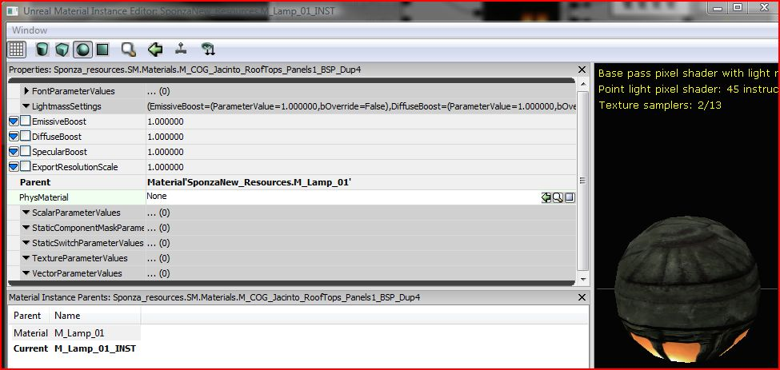
- EmissiveBoost - これを選択した場合、親の EmissiveBoost をオーバーライドします。
- DiffuseBoost - これを選択した場合、親の DiffuseBoost をオーバーライドします。
- SpecularBoost - これを選択した場合、親の SpecularBoost をオーバーライドします。
- ExportResolutionScale - これを選択した場合、親の ExportResolutionScale をオーバーライドします。